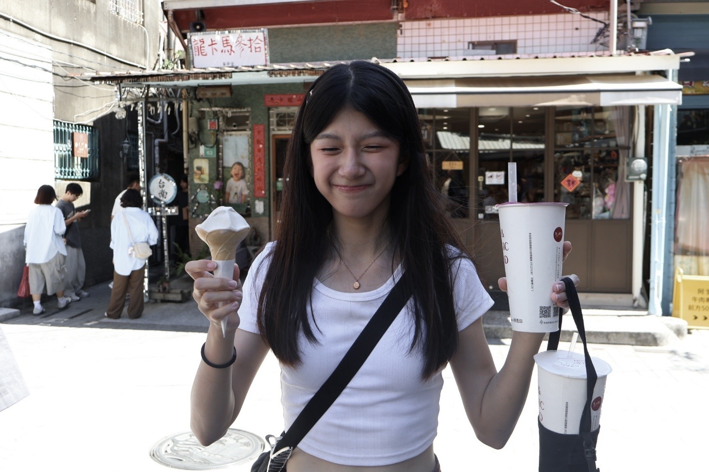
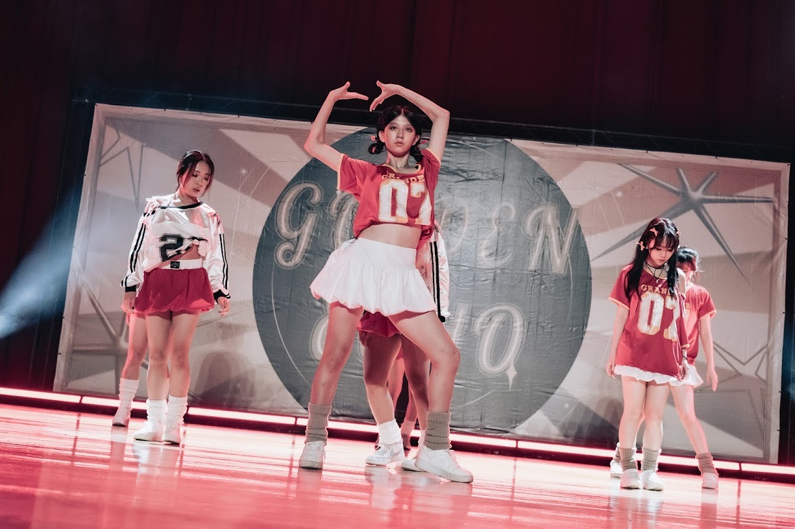
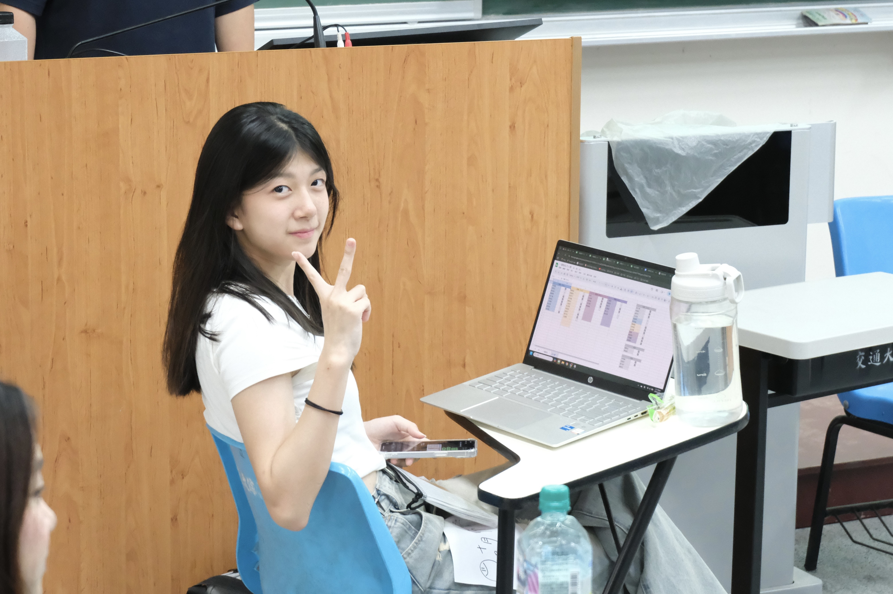
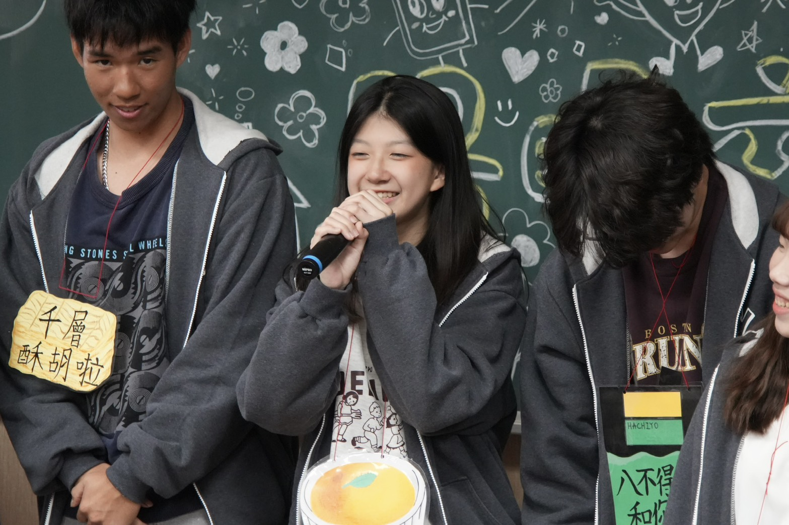
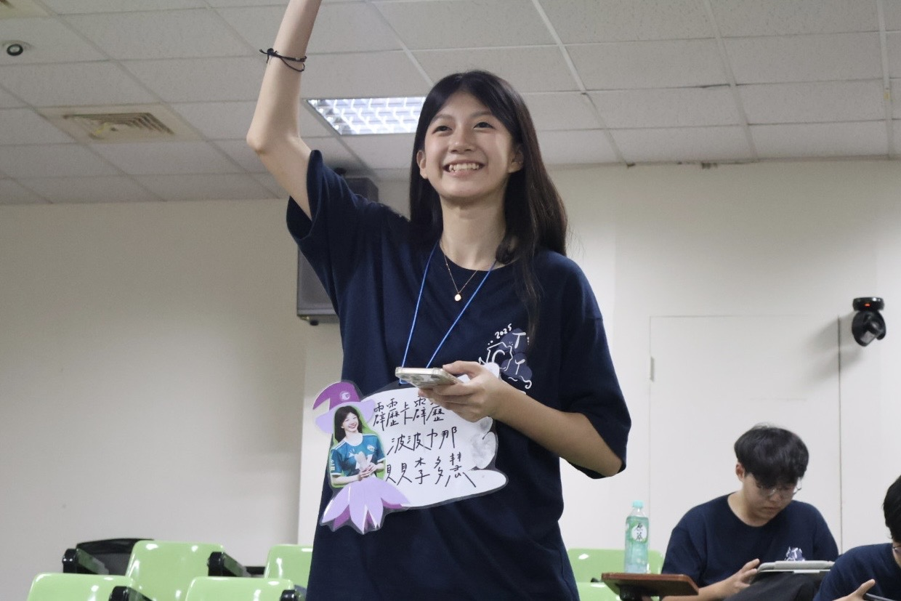
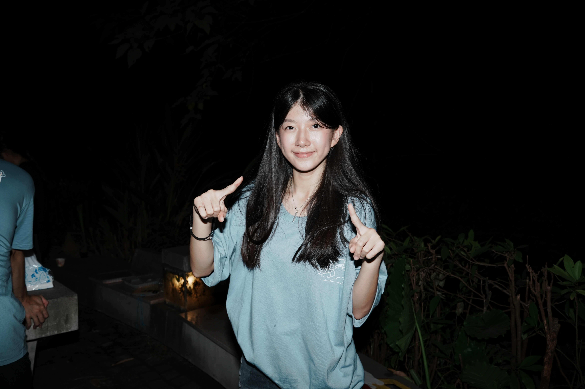

歡迎來到此網站！
| 下面 this is meee! | 基本資料 | |||||||
|---|---|---|---|---|---|---|---|---|
|  | 姓名 | 胡妤安 | 英文姓名 | Sophie | 學號 | 113483011 | ||
| 生日 | 2006/08/08 | 星座 | 獅子座 | MBTI | INFJ | |||
| 自我介紹 |
# 正統的台中人，但跟台中一點都不熟 # 平常個性害羞安靜內向，這才是本性，吵的時候都是狗叫 # 個性貪心叛逆，喜歡讀書也喜歡辦營隊，也喜歡好多好多身邊的人 # 哀居上的自我介紹寫：好喜歡就這樣抓住幸福的碎片 # 吃飯很快，別人才剛打開便當我已經吃完了 # 開學就準備好安全帽 立志不考機車駕照度過大學生活 |
|||||||
| 學歷 | |||||||
|---|---|---|---|---|---|---|---|
| 國小 | 台中市永春國民小學 | ||||||
| 國中 | 台中市曉明女子私立高級中學 | ||||||
| 高中 | 台中市曉明女子私立高級中學 | ||||||
| 大學 | 國立陽明交通大學 | 科系 | 傳播與科技學系 | ||||
| 其他經驗 | |||||||
| 熱舞社 | 交大桃友會 美宣長 |
2025 國立陽明交通大學 探索體驗營 公輔組 |
2025 國立陽明交通大學 桃雲嘉友會迎新宿營 行政組執秘 |
2025 國立陽明交通大學 傳科機械聯合迎新宿營 公輔組 |
2026 國立陽明交通大學 探索體驗營 公輔長 |
||
| 相關照片 |  |  |  |  |  | 未完待續 | |
無，唯有在大一上學期的「統計學」課中，學習基礎的 R Markdown 語言。
目前正在此門課中，學習HTML、CSS、Javascript
同時本學期除了「基礎網頁設計」，也修習系上選修「數位傳播探勘」，學習 Python 與 R 語言。
目前沒有建議，
不過很喜歡老師上課用的 PPT 簡報。
每次上課看到簡報都覺得內容整理得很清楚，而且重點都抓得很到位，不會有太多讓人看不懂的地方。
對於我們在學程式語言來說，這樣的簡報就像是一個很好用的地圖，讓我能一步一步跟著老師的節奏學習。
整體來說，真的覺得幫助很大，學起來比較不會迷失方向。